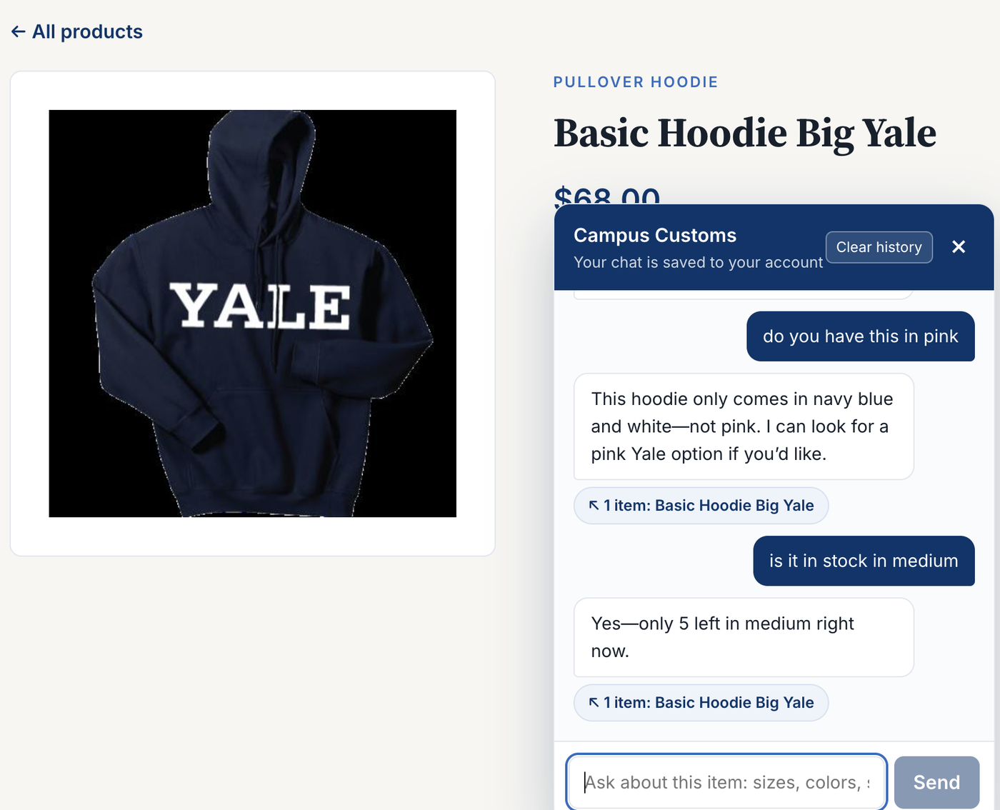
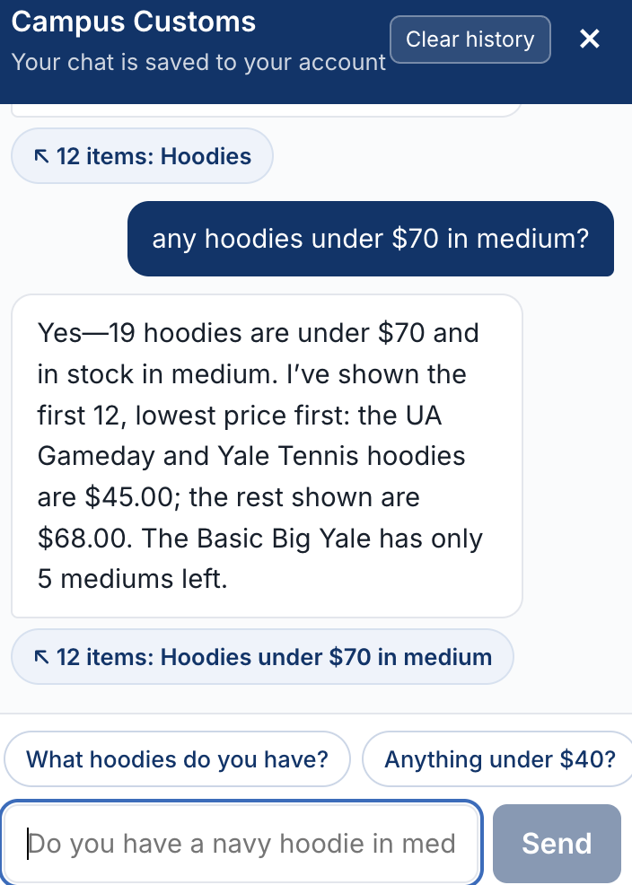
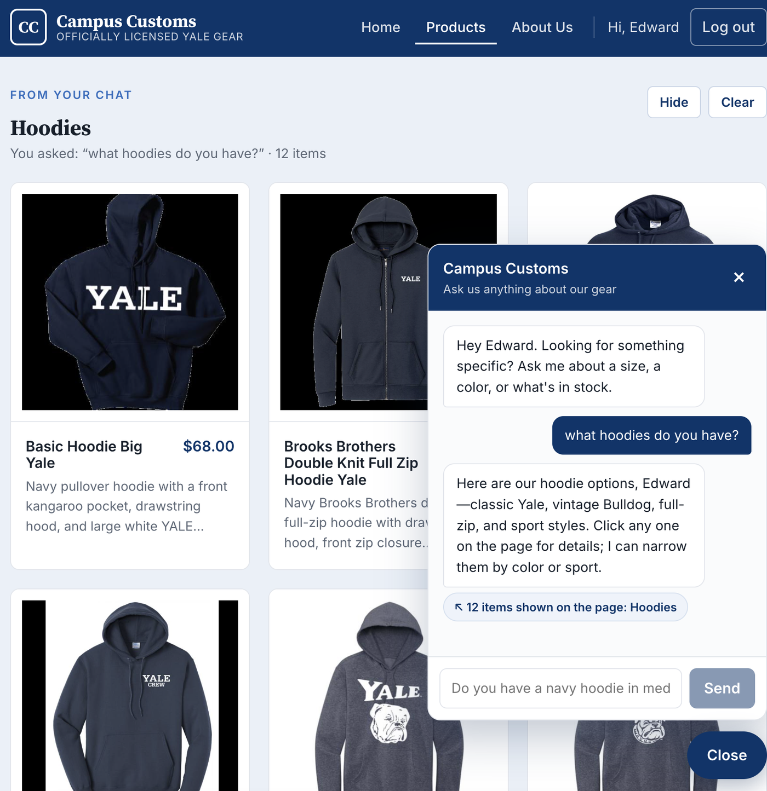
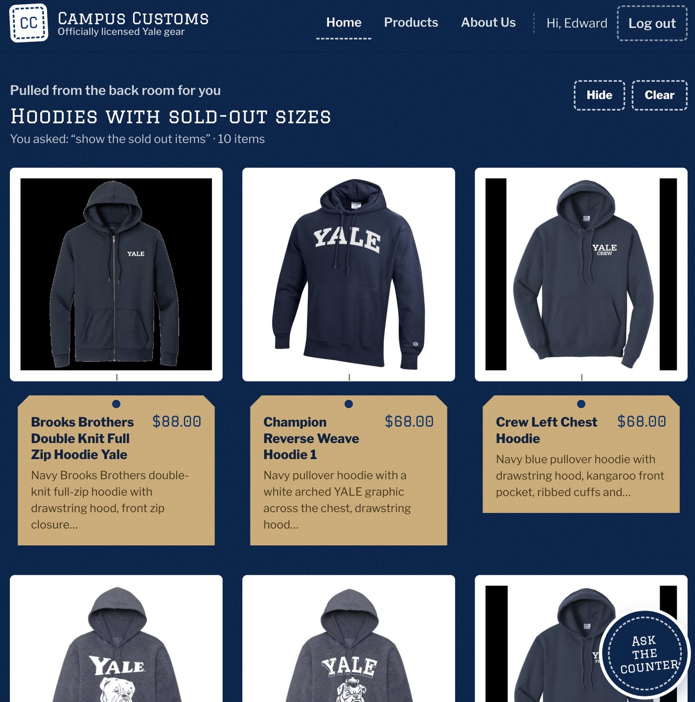
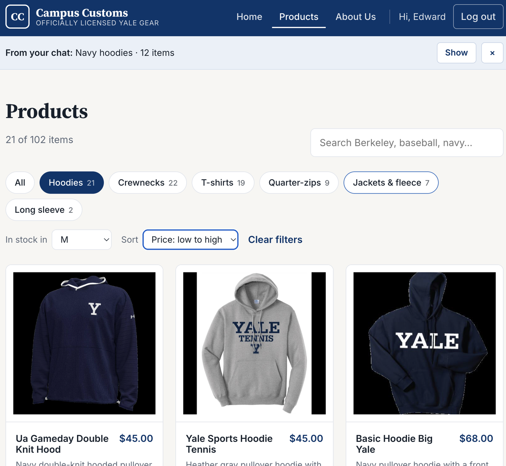
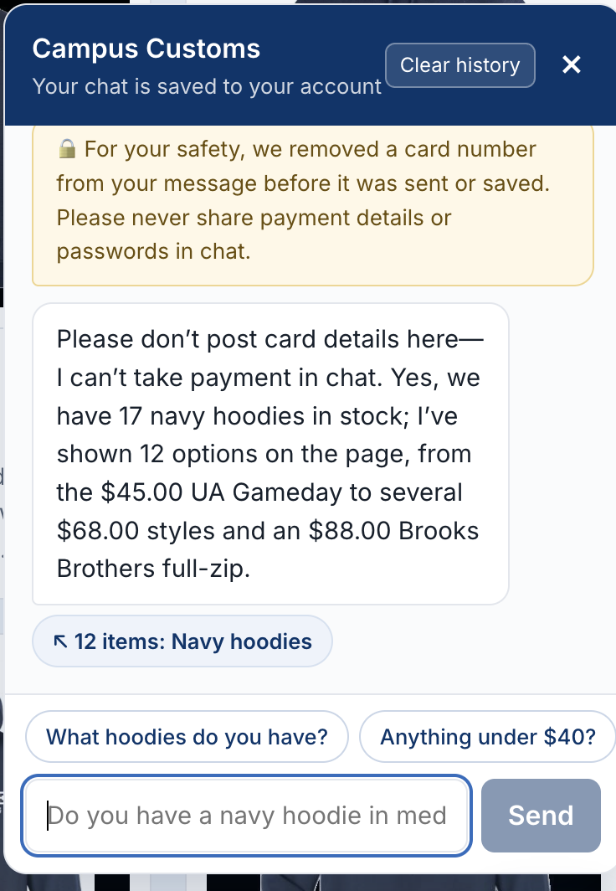

1. Chat checks an item's inventory
PassOn the Basic Hoodie Big Yale product page I asked "do you have this in pink", then "is it in stock in medium".

check_stock and answered "only 5 left in medium", which is the exact database count, flagged as low stock. It knew "this" and "it" meant the hoodie on screen (page context from Problem 8) and gave its real colors instead of inventing a pink one.| Chat said | Database says | |
|---|---|---|
| Only comes in navy blue and white | catalogue.colors = ["navy blue", "white"] | Match |
| Only 5 left in medium | inventory M = 5 (XS 15, S 5, L 8, XL 2, XXL 25) | Match |
| Page price $68.00 | catalogue.price = 68.0 | Match |

filter_products call. The count (19), the prices ($45.00 and $68.00), and the low-stock warning all came from the database, not from the model.| Chat said | Database says | |
|---|---|---|
| 19 hoodies under $70 in stock in medium | 19 hoodie products with price ≤ 70 and M quantity > 0 | Match |
| UA Gameday and Yale Tennis hoodies are $45.00 | Both priced 45.0, the lowest hoodie price | Match |
2. A category question puts dynamic product cards on the page
PassI asked the chat "what hoodies do you have?"


3. Problem 9 usability features in the running app
PassOn the Products page I clicked Hoodies, set In stock in to M, and set Sort to Price: low to high.

| Page shows | Database says | |
|---|---|---|
| Hoodies in stock in M: 21 | 21 hoodie products with M quantity > 0 | Match |
| Cheapest first: $45.00, $45.00, $68.00… | Lowest hoodie prices 45.0, 45.0, then 68.0 | Match |

[card number removed] and no card digits.The other two Problem 9 features also appear in these screenshots. The quick-start chips ("What hoodies do you have?", "Anything under $40?") sit above the chat input in check 3. The filter_products tool produced the "19 hoodies under $70 in medium" answer in check 1.
Summary
- Inventory: the stock counts, prices, and colors the chat quoted all match the database. Nothing was invented.
- Dynamic cards: a category question put real product cards on the page, and the cards open the detail view.
- Usability: the filters, chat chips,
filter_products, and the safety guardrail are all visible in the running app.